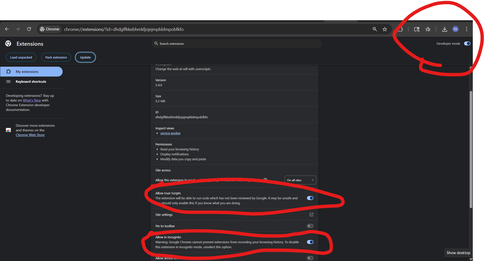
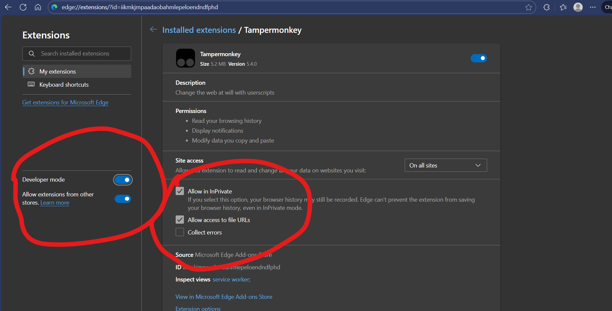

This page provides a one-click installation for the script that improves your browsing experience when encountering filtered content.
Your browser blocks direct links to settings for security. Please copy the address and paste it into your address bar.
For Chrome / Brave:chrome://extensions/?id=dhdgffkkebhmkfjojejmpbldmpobfkfo
On the settings page, find and enable the "Allow User Scripts" option. The toggle should be blue, as shown below.
 For Microsoft Edge:edge://extensions/?id=iikmkjmpaadaobahmlepeloendndfphd
On the settings page, ensure the main toggle switch for Tampermonkey at the top-right is On (blue). The "Allow User Scripts" option does not exist on this page for Edge. Optionally, you can also check "Allow in InPrivate" if you use private browsing.
When you try to access a link and are blocked by a Techloq filter page, this script automatically detects the link. It then seamlessly redirects you to an unfiltered version of the page, bypassing the block.